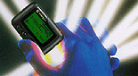
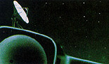
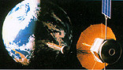
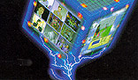

|
|  |
세계 최소형 무선호출기 개발, 한국 최초 한글.영
문.중문자표시 호출기 개발, 한국 최초 음성호출
기 및 광역호출기 개발, FLEX방식의 초고속 호출
기 개발, 미래형 쌍방향 무선호출기 개발 등 팬택
은 뛰어난 기술력으로 한국 호출기 시장은 물론
세계 호출기 시장의 리더로 자리잡고 있습니다. |

|  |
개인휴대통신의 결정체 CDMA방식의 PCS. 팬택
은 한국 최초로 일본형 PCS(PHS)를 개발, 관련 기
술 및 제품을 일본으로 수출하고 있으며, CT-2
Plus, CDMA방식의 PCS, WLL, PDA GSM 등 첨단통
신기술의 개발을 위해 땀흘리고 있습니다. 세계
에서 인정받는 팬택의 기술은 휴대성, 실용성을
바탕으로 첨단 개인휴대통신의 새로운 세계를 열
어갑니다. |
|
미주, 유럽, 중국 등 세계곳곳에서 TRS 무전기의
기술력을 떨치고 있는 팬택 - 팬택의 LMR, 및 TRS
기술은 한국표준으로 선정될만큼 그 우수성을
자랑하고 있습니다. |
|
팬택은 92년부터 첨단 CCD 카메라, CCD 카메라
모듈, 컬러PC카메라 등 CCTV 시스템 관련 제품을
개발, 생산하고 있습니다. 사이버 세대의 생활의
편리와 안전한 삶의 공간 - 팬택이 꿈꾸는 삶의
新낙원입니다. |
|  |
또렷하고 선명한 디지털 위성방송 시스템. 전세
계 어느 방송이든 깨끗한 화질로 만날 수 있는 팬
택의 디지털 위성방송 수신기기. 팬택은 기술을
통해 위성방송의 역사를 만들어갑니다. |
|  |
고성능을 자랑하는 통합영상보드, 초고속 VGA
카드와 영상편집시스템, 33,600bps의 초고속 팩스
모뎀 등 팬택의 멀티미디어 사업은 21세기를 열
어갑니다. |
|
팬택은 유망한 게임개발사인 미리내 소프트웨어
에 출자한 이래, 각종 게임소프트웨어를 개발하
여 한국의 게임시장을 주도해 나가고 있으며, 95
년 3월 교육과 오락을 통합시킨 VAN서비스 (Edut-
ainment Park)를 개통하여 본격적인 종합정보통신
회사로 발돋움을 시작했습니다. |
|